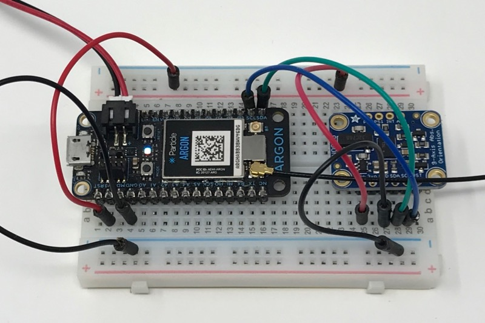

This is the BLE IMU example. It allows a Gen 3 device to communicate directly with your web browser if you have:
The really cool thing is that there's no server processing the data. The orientation data from the IMU is sent by BLE from the Argon directly to your computer, Android phone, or Chromebook where it's rendered. The rendering is done using WebGL with nothing done on the server, and no browser plug-ins required!
Here's a video of it in action.
It requires the Adafruit BNO055 IMU, "9-DOF Absolute Orientation IMU Fusion Breakout."

Connect:
Be sure to position it in the same way on the breadboard, otherwise you'll have to modify the code to change the sign of roll and pitch.
And here's the code to flash to your device. Be sure to include the Adafruit_BNO055_RK library.
#include "Particle.h"
#include "Adafruit_BNO055_RK.h"
SYSTEM_MODE(MANUAL);
Adafruit_BNO055 bno = Adafruit_BNO055(55);
const BleUuid serviceUuid("a2916c31-22b3-4284-93ba-8a784fa0baff");
const BleUuid valueUuid("b871bee1-e621-40db-8d31-4c86b2acfebb");
BleCharacteristic valueCharacteristic("value", BleCharacteristicProperty::NOTIFY, valueUuid, serviceUuid);
const unsigned long UPDATE_PERIOD_MS = 100;
unsigned long lastUpdate = 0;
void setup() {
Serial.begin();
if (!bno.begin()) {
Log.info("Failed to initialize BNO055");
}
BLE.addCharacteristic(valueCharacteristic);
BleAdvertisingData data;
data.appendServiceUUID(serviceUuid);
BLE.advertise(&data);
}
typedef union {
struct {
float x;
float y;
float z;
} sample;
uint8_t bytes[12];
} Sample;
void loop() {
if (BLE.connected()) {
if (millis() - lastUpdate >= UPDATE_PERIOD_MS) {
lastUpdate = millis();
sensors_event_t event;
bno.getEvent(&event);
Sample sample;
sample.sample.x = event.orientation.x;
sample.sample.y = event.orientation.y;
sample.sample.z = event.orientation.z;
valueCharacteristic.setValue(sample.bytes, sizeof(Sample));
}
}
}